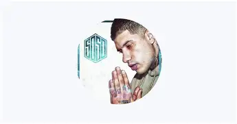

| FOTO | CANCION | LETRA | VIDEO |
|---|---|---|---|
| NUNCA DE PUDE ALCANZAR | Quiero prenderme esta tarde y preguntar: ¿cuándo nos vemos? Este niño ya no juega, y en la calle, mucho menos Mi patio de recreo siempre fue en tu espalda y senos Y mi noche más amarga, tener que echarte de menos Pero bueno, si lo pides, entonces no recordemos Y si nos vemos de frente, sé que no nos conocemos Borra el tiempo, tira todo lo que te recuerde a mí Las fotos que te tomé, las cartas que te escribí, sí Nada es suficiente como tus grandes abrigos Como tus aretes caros, la fiesta con tus amigos Yo nunca fui bienvenido por mi finta y los tatuajes Porque ni yo fui tu príncipe y mi Mazda, no es carruaje No quieras que me rebaje, que me calme o me relaje No me escribas por las redes, borra todos mis mensajes No me esperes de regreso cuando termine mi viaje Porque a tu maldito ego, le dedico este homenaje Yo te di todo lo que te pude dar Pero no fue suficiente, nunca te pude alcanzar Fue una estrella que dejó de brillar Del odio al amor, hay un paso que no quiero dar Yo te di todo lo que te pude dar Pero no fue suficiente, nunca te pude alcanzar Fue una estrella que dejó de brillar Del odio al amor, hay un paso que no quiero dar Salí de madrugada, un seis en las manecillas Y aunque pudo ser mi cielo, esa estrella ya no brilla Le gustaba vestir caro, a mí, la vida sencilla Siempre cigarro Marlboro, yo mi gallo sin semilla Mi verso mejor escrito le causaba un malestar Y una tormenta de dudas si sonaba el celular Nunca la pude entender, nunca pudimos hablar Nunca pudimos volver, nunca me enseñó a bailar En paz tuve que dejar todo lo que un día soñé Volví solo por mi suerte, me monté al ritmo y volé, volé, volé, volé De todo el mal, yo me alejé Si ven a mi amor perdido, por favor, avísenle Yo te di todo lo que te pude dar Pero no fue suficiente, nunca te pude alcanzar Fue una estrella que dejó de brillar Del odio al amor, hay un paso que no quiero dar Yo te di todo lo que te pude dar Pero no fue suficiente, nunca te pude alcanzar Fue una estrella que dejó de brillar Del odio al amor, hay un paso que no quiero dar | https://youtu.be/H1ASw2INYkI?si=lP-_oq3MgpomwzTN | |
| LE CHIVO | Un, dos, tres, ah Uoh-oh-oh-oh-oh Me desperté relax Voy a desayunar Un cereal med de la Cookies Que ahora es medicinal Las libras del papel Me hicieron levantar Con el humo que aviento Todo esto se va a soltar El Chivo ahora aquí está La correa está de más Me pasa el toque, la devuelve Y todo está normal (Yeah) We pull it fresh off the branch Smoking out the pound bag While these clear stones dance (Too many dancin') Weed from Northern California But my papers are from France (We smokin' lots) Had to go big, fuck it You only get one chance (You only get one chance) Why they call me El Chivo? 'Cause I feed all my people (El Chivo) Been rich since nine-six, 'fore the weed went legal (Bags) Big farms, new cars, and a few jars The cereal milk taste so crazy I'ma need more (Receipts) Yeah, I just opened up a weed store (Weed store) Blue bags got your boy in a weed war (I'm in a weed war) Kris, they ain't smoking like this (Nah) The Gelato with the mints, that's a hell of a mix, damn Me desperté relax Voy a desayunar Un cereal med de la Cookies Que ahora es medicinal Las libras del papel Me hicieron levantar Con el humo que aviento Todo esto se va a soltar El Chivo ahora aquí está La correa está de más Me pasa el toque, la devuelve Y todo está normal Dog, this shit smell like candy (Like candy) In the cut, rolling up, getting high With my family (With my family) And in the Andes, looking for the seeds that grew in the '60s (I'm in Columbia) All this smoke in the studio, it got your boy dizzy (It got me dizzy) I got bags in my trunk, where the glow tray? (Glow tray) Groupie girls in my show wanna role play (Get my drama on) I'm so paid I eat steak on a gold plate My watch look like a block full of snowflake Grow something if you got it The cello got us right, the whole world want it (Damn) Kris, they ain't smokin' like this The Cheetah Piss got me lazy as shit, ha Me desperté relax Voy a desayunar Un cereal med de la Cookies Que ahora es medicinal Las libras del papel Me hicieron levantar Con el humo que aviento Todo esto se va a soltar El Chivo ahora aquí está La correa está de más Me pasa el toque, la devuelve Y todo está normal Es que no tengo la paciencia (Paciencia) De pensar en negativo (Negativo) Como dice el compa Chivo (Chivo) "Mejor quema un gallito" Woah-oh-oh-oh-oh Woah-oh-oh-oh-oh-oh-oh Es que no tengo la paciencia (Paciencia) De pensar en negativo (Negativo) Como dice el compa Chivo (Chivo) "Mejor quema un gallito" Woah-oh-oh-oh-oh Woah-oh-oh-oh-oh-oh-oh Me desperté relax Voy a desayunar Un cereal med de la Cookies Que ahora es medicinal Las libras del papel Me hicieron levantar Con el humo que aviento Todo esto se va a soltar El Chivo ahora aquí está La correa está de más Me pasa el toque, la devuelve Y todo está normal (Woah-oh-oh-oh-oh-oh-oh) |
https://youtu.be/xWfi0NYo2nM?si=AnG9n3cz4UE65ixz | |
 |
TU ERES OTRO PEX |
Flow malandro 2016, perros Yaoh Mami Es el 5050 ¿Por qué te quiero tanto? Eso ni yo lo sé Entre todas ellas, tú eres otro pex Contigo más de una vez (una, y una, y una más) Oh, te pienso todos los días Presiento, algo no anda bien (que algo no anda bien) ¿Por qué te quiero tanto? Eso ni yo lo sé (¿por qué?, No sé) Entre todas ellas, tú eres otro pex (tú eres otro pex) Contigo más de una vez Oh, te pienso todos los días Presiento, algo no anda bien Siempre con su pelo lacio En la mañana le pega al gimnasio Siento que me merezco al chilaso ese cuerpazo Con ella me sobra espacio, en cortito me le lanzo No le pienso ni hago panchos Me tiene a cada rato volando Como la marihuana me tiene viciado Sus besos los recuerdo y los tengo tatuados Ella me dice, "Papi, me gustan rayados Pelones y raperos", acá bien malandros Que dicen que soy ese vatito engüilado Que la besa por el cuello y la agarra de la mano Pero a la cama llegamos No daré detalles de lo bien que la pasamos ¿Por qué te quiero tanto? Eso ni yo lo sé Entre todas ellas, tú eres otro pex (tú eres otro pex) Contigo más de una vez (una, y una, y una, y otra más) Oh, te pienso todos los días Presiento, algo no anda bien ¿Por qué te quiero tanto? Eso ni yo lo sé (¿por qué?, No sé) Entre todas ellas, tú eres otro pex (tú eres otro pex) Contigo más de una vez Oh, te pienso todos los días Presiento, algo no anda bien Siento la diferencia Hasta en la forma en que me besas Tan loquita como yo, de naturaleza Whisky, tequila y cerveza, toma todo ella no es fresa Eso nomás conmigo, sé cómo es, no su apariencia Hasta que amanezca fumando marihuana Prefiero oler a mota que a Dolce Gabbana Por las noches me llama y me pregunta si estoy bien Por eso te quiero tanto aunque no lo quiero hacer Ella sabe quién soy, por eso me contesta Me dice: "Quiero verte", pa' mí siempre está puesta Son pocas las mujeres que conozco como ella Me dice: "Deja el carro y sube a mi camioneta" Un besote primero pa' una reina de un rapero Tengo mujeres que solo las obtienes si hay dinero Con la boca bien grandota, silicona, nalga y senos Que es mejor lo natural, cuando la veo, no lo creo Belleza le sobra (le sobra) Belleza le sobra (te sobra) Belleza le sobra (belleza te sobra) Belleza le sobra (sí) ¿Por qué te quiero tanto? Eso ni yo lo sé (ni yo lo sé) Entre todas ellas, tú eres otro pex (tú eres otro pex) Contigo más de una vez (una, y una, y una más) Oh, te pienso todos los días Presiento, algo no anda bien ¿Por qué te quiero tanto? Eso ni yo lo sé Entre todas ellas, tú eres otro pex Contigo más de una vez (una, y una, y una más) Oh, te pienso todos los días Presiento, algo no anda bien (algo no anda bien) (Eso ni yo lo sé) (Tú eres otro pex) (Otra, y otra, y otra, y otra vez) (Algo no anda bien) (Que yo no sé) (Tú eres otro pex) (Contigo, mami) (Algo no anda bien) |
https://youtu.be/HhKj0mnS9o4?si=QjqjJuT2CdkoFL81 |
| DEJATE QUERER |
El brillo de tus ojos me ilumina (me ilumina) Me gusta verte cuando a mi lado caminas (lado caminas) Si me das un beso, me sube la adrenalina (adrenalina) Me quitas el dolor como las aspirinas (aspirinas) Un paseo por el parque Anda, ven, tengo mucho que contarte Mira que ya se está haciendo tarde Si quieres, conmigo puedes quedarte ¿Cómo ves si vamos pa la otra parte? De verdad, no quisiera incomodarte Perdona si no dejo de mirarte No soporto que estemos tan distantes Cuando toco tu piel, yo me puedo perder Comenzamos a arder, tú déjate querer Cuando toco tu piel, yo me puedo perder Comenzamos a arder, tú déjate querer Navegando por tu cuerpo, yo crucé por tu frontera No hagas caso a lo que digan, yo te quiero de a de veras Me gustas de una y más de mil maneras Es una completa locura perderme en esas caderas Tu cintura, pa mi corazón dañado, nena, tú tienes la cura Apaguemos las luces, quiero hacerte el amor a oscuras Yo te busco, pero me la pones dura Y por tu culpa me va a dar temperatura Y se mojan las sábanas Forjo un blunt de guanábana Lo hacemos hasta la mañana Tú bien sabes lo que pasará Cuando estemos en la intimidad Anda, ya no seas tan tímida A mí me gusta tu habilidad De acariciarte con tranquilidad Cuando toco tu piel, yo me puedo perder Comenzamos a arder, tú déjate querer Cuando toco tu piel, yo me puedo perder Comenzamos a arder, tú déjate querer |
https://youtu.be/vbHU5vUwS-A?si=cy03_jOSgV7j_rmU | |
| SUENA |
No caben tres en esta relación No quiero ni tu falsa explicación Mejor vivir solo en este mundo Duele decirlo, pero no hay amor No quiero que andes pidiendo perdón Acéptalo, cometiste un error Soy el único en el universo Que se despide con una canción Suena mi guitarra a las cinco de la mañana Y abre tu ventana Estás desvelada Se te acabó, el tiempo, ahora no vales nada Cómo suena de bien, cuatre Yes it is, compa J Mueres por mí, eso yo ya lo sé Tus amenazas recuerdo muy bien Qué feo se ve que te cortés la piel Tú eres hermosa, mi linda mujer El sentimiento desapareció Hace tiempo que tengo pensado Ser independiente en el futuro Pa vivir la vida un poco mejor Suena mi guitarra a las cinco de la mañana Y tú abre tu ventana Estás desvelada Se te acabó el tiempo, ahora no vales nada |
https://youtu.be/PEKd3dwario?si=QOy6N7fIam0h7WMq |